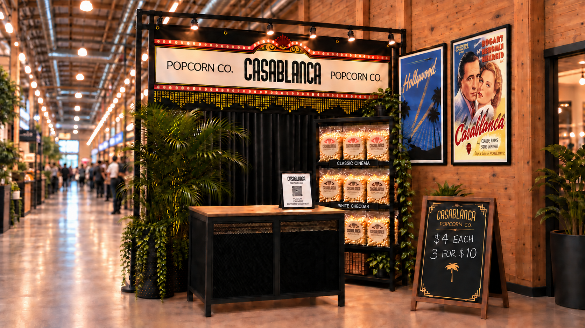

Pop in and say hello
Come find us.
Opening October 1, 2026, at St. Jacobs Farmers’ Market. We produce our popcorn in Kitchener and sell it at our retail location in Peddler’s Village.

Find us.
Retail sales
St. Jacobs Farmers’ Market
Peddler’s Village
Opening October 1, 2026
Market hours
Thursday, 8:00 AM–3:00 PM
Saturday, 7:00 AM–3:30 PM
Our popcorn is produced in Kitchener. Have a retail idea or want to work together? Send us a note.
sales@casablancapopcorn.comCall or text: 519-807-1108